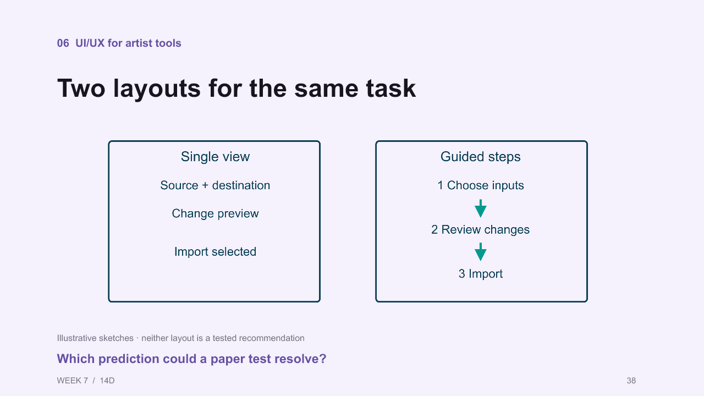

Start with observable changes
This review uses Week_7_Python_in_Unreal_v13.pptx, the latest deck found in the course's Unreal-first folder. Slide numbers include its cover: the adjacent source JSON is offset by one. The PowerPoint remains unchanged.
The strongest additions are the matched bridge revision, material result/recovery, warning versus blocked states, native/PySide comparison, VFX scope/result, and desktop grouping examples. These connect to the course tasks without a phone-app detour.
Collection expands the usable local evidence pool. Existing Epic, Microsoft and GDC visuals are retained and clearly identified as previous material, not new discoveries. Source captures are copied without crops or generative alteration.
Asset manifest and rights · Bridge verification · Live rehearsal evidence
Evidence weighting
Local captures demonstrate specific states; local verification reports support specific outcomes. Production talks provide examples of practice. Usability guidance corroborates principles, not measured effectiveness of these layouts. Prioritize a clear teaching job over the number of citations.
FIRST PASS · V01 · Slides 29, 37, 84One revision, two updated placements
Matched live rehearsal
Current slide 29

Exact extracted text
02 Brief Blender bridge demo
Blender bridge: one geometry revision
WEEK 7 / 10D
29
Select one mesh. Publish & Send to Unreal.
Raise the roof 0.4 m. Send the same asset name.
Verify both blue instances update; placement and materials stay.
Recorded Blender UI reference. Geometry revision; materials stay in Unreal.
Reset: publish the baseline mesh again using the same asset name.
Integration: Keep the title and prediction question on slide 29. Replace a small overview with a large before/after Unreal pair; reveal the Blender edit between them. Reuse one frame on slide 37 beside the user story.
Read aloudPredict which objects should change when I raise the roof in Blender. Both blue placements use the same mesh. After publishing, inspect both of them and compare the orange objects. What evidence would convince you the revision reached the intended asset?
Why this earns space: Shows the precise task and its observable outcome; gives the user story a real object. Verification records 180 to 220 cm for both Blender instances and 180 cm for Maya examples.
Evidence limits: Historical rehearsal, not a newly executed check. Preserve the blue/orange identity and equal crop framing. Read the verification record before asserting more than the visible shape change.
Conceptual corroboration: import · mental
Provenance and credits
- Existing course capture; retain application and asset provenance
- Existing course capture; retain application and asset provenance
- Existing course capture; retain application and asset provenance
Exact paths, hashes, dimensions, existing-deck match and inherited rights are recorded in the manifest. Images are raster source captures, not editable diagrams.
Applied result and recovery are different checks
Matched live Unreal results
Current slide 41

Exact extracted text
06 UI/UX for artist tools
State and feedback
WEEK 7 / 15A
41
Detail from the current Material Setup practice interface
What would you inspect after the completion message?
Integration: On slide 41, keep the current status crop and add the actual blue-cube result. On slide 44, replace one bullet block with baseline / applied / recovered images. Retain the accessibility example separately.
Read aloudThe message says the operation completed. Now inspect the target and the protected cube. After Undo, inspect again. The recorded rehearsal restored the assignment, but the newly created material asset remained. What does recovery promise here?
Why this earns space: Makes completion versus task success visible. The rehearsal report corroborates the protected cube, shared mesh and assignment checks; it also records the limit of Undo.
Evidence limits: These renders show scene appearance, not asset deletion. Do not label the final frame a complete project rollback.
Conceptual corroboration: transaction · heuristics
Provenance and credits
- Existing course capture; retain application and asset provenance
- Existing course capture; retain application and asset provenance
- Existing course capture; retain application and asset provenance
Exact paths, hashes, dimensions, existing-deck match and inherited rights are recorded in the manifest. Images are raster source captures, not editable diagrams.
Warning and hard block require different decisions
Offline practice states + separate live example
Current slide 42

Exact extracted text
06 UI/UX for artist tools
A UI state becomes a Qt decision
WEEK 7 / 15G
42
pending = self.session.pending
ready = bool(pending) and (
not pending[3].get('warnings')
or self.ack.isChecked()
)
self.apply_button.setEnabled(ready)
Requires the surrounding widget class.
Why must Apply still recheck the operation?
Integration: Keep the Qt enabled-state code on slide 42, with the warning acknowledgement beside it. On slide 43, compare the warning and blocked message at readable size. Use the live duplicate-placement panel as optional follow-through.
Read aloudA warning asks you to review a condition. A block requires you to change the input before continuing. Which action is available in each state? Acknowledgement does not turn an invalid operation into a valid one.
Why this earns space: Grounds a code condition in visible controls and provides a precise recovery discussion. The local live report separately confirms duplicate placement is blocked.
Evidence limits: The practice screenshots explicitly use invented sample data. The native panel is a different live state; do not present the three as one continuous recorded attempt.
Conceptual corroboration: heuristics · qt
Provenance and credits
- Existing course capture; retain application and asset provenance
- Existing course capture; retain application and asset provenance
- Existing course capture; retain application and asset provenance
Exact paths, hashes, dimensions, existing-deck match and inherited rights are recorded in the manifest. Images are raster source captures, not editable diagrams.
Two real interfaces for the same workflow
Live Unreal native panel and PySide window
Current slide 39

Exact extracted text
06 UI/UX for artist tools
Layout follows the task
WEEK 7 / 15
39
Detail from the current Material Setup practice interface
Which row tells you what will change on the crate?
Integration: Use as the main comparison on slide 61. Keep slide 39 focused on one table, then link Explore further: Two interfaces, one Python workflow. Do not compare the screenshots as equal operational states.
Read aloudFind the scope, proposed or applied rows, and next action in each interface. The first capture shows a preview; the second shows completion. We can compare how each presents the workflow, but these images do not measure which interface is easier.
Why this earns space: Directly supports the desktop focus and replaces abstract UI talk with the actual tools students encounter.
Evidence limits: Different states, not a controlled usability test. Native preview versus PySide completion must remain labeled.
Conceptual corroboration: python · qt
Provenance and credits
- Existing course capture; retain application and asset provenance
- Existing course capture; retain application and asset provenance
Exact paths, hashes, dimensions, existing-deck match and inherited rights are recorded in the manifest. Images are raster source captures, not editable diagrams.
Preview targets, then inspect the effect
Live VFX preview and scene result
Current slide 23

Exact extracted text
01 Python in Unreal
UE06: Read-only validation
WEEK 7 / 09H
23
for texture in textures:
if not texture.get_name().endswith("_Normal"):
continue
checked += 1
actual = texture.get_editor_property("compression_settings")
if actual != expected:
mismatches += 1
print("MISMATCH", texture.get_path_name(), actual, expected)
Setup defines textures, expected compression and counters. Check prints the final totals.
Run in Unreal. First run UE06: setup.
Why does zero checked not establish a pass?
Integration: On slide 63, place the preview table next to a large scene result. For slide 23, use the preview only as a separate example of inspectable scope; retain the actual validation code.
Read aloudCount the target rows before applying. Then inspect where the effects appear in the scene. Placement validation checks scope and spacing; what other evidence would you need to discuss performance?
Why this earns space: Links a textual plan to three spatial outcomes. The rehearsal report records exactly three placements.
Evidence limits: No frame-time or packaged-runtime measurement. A still of fountains is not performance evidence.
Conceptual corroboration: heuristics · python
Provenance and credits
- Existing course capture; retain application and asset provenance
- Existing course capture; retain application and asset provenance
Exact paths, hashes, dimensions, existing-deck match and inherited rights are recorded in the manifest. Images are raster source captures, not editable diagrams.
Grouping in an actual desktop tool
Three offline course UI stages
Current slide 38

Exact extracted text
06 UI/UX for artist tools
Two layouts for the same task
WEEK 7 / 14D
38
Illustrative sketches · neither layout is a tested recommendation
Which prediction could a paper test resolve?
Integration: Keep the two alternative sketches on slide 38; add a named Explore further link to these desktop states. On slide 39, use one enlarged current screenshot and discuss scope, inputs, preview, action grouping.
Read aloudLocate the selected scope, the material inputs, the change preview and Apply. Which relationships are clear from grouping? Make a prediction about where someone might hesitate, then test it. A more polished screen does not by itself prove better usability.
Why this earns space: Turns the spacing/grouping discussion into a course-specific desktop example, with the same material task across stages.
Evidence limits: Prepared UI progression, not measured improvement. These are offline practice captures, not live engine outputs.
Conceptual corroboration: layout · heuristics
Provenance and credits
- Existing course capture; retain application and asset provenance
- Existing course capture; retain application and asset provenance
- Existing course capture; retain application and asset provenance
Exact paths, hashes, dimensions, existing-deck match and inherited rights are recorded in the manifest. Images are raster source captures, not editable diagrams.
Responsive desktop controls
Offline normal and narrow windows
Current slide 44

Exact extracted text
06 UI/UX for artist tools
Recovery and accessibility
WEEK 7 / 15B
44
# Existing PySide view implementation
self.preview.setAccessibleName(
"Selected Actors change preview"
)
Review consequential changes before applying them
Test the recovery path you actually offer
Keep focus, labels, and status understandable
Requires the surrounding widget class.
Could a classmate recover without help?
Integration: Add the pair to the keyboard/accessibility reference. Use one enlarged region to discuss wrapping, scroll access and the acknowledgement checkbox; keep the code accessible-name example as implementation detail.
Read aloudWhat stays reachable as the window narrows? Try to locate the warning, checkbox and Apply control. What would you still need to test using the keyboard?
Why this earns space: Adds desktop resizing to the accessibility discussion, rather than borrowing a phone layout rule.
Evidence limits: A screenshot cannot establish tab order, screen-reader support or successful keyboard operation.
Conceptual corroboration: focus · qt
Provenance and credits
- Existing course capture; retain application and asset provenance
- Existing course capture; retain application and asset provenance
Exact paths, hashes, dimensions, existing-deck match and inherited rights are recorded in the manifest. Images are raster source captures, not editable diagrams.
Shared mesh, distinct surface appearance
Previously collected Epic reference
Current slide 16

Exact extracted text
01 Python in Unreal
Shared asset, separate placements
WEEK 7 / 06A
16
The live material demo changes a component override on Actor A
Where would you make a change that affects only Actor A?
Integration: Promote the three-cube image to slide 16 if not already present. Keep the Actor/component/mesh code on slide 15; use the image to predict the difference between component override and shared-asset editing.
Read aloudThese Actors share a mesh but can display different materials. Which part of the setup would you change to affect one placement? Which change could affect all users of the shared asset?
Why this earns space: Clear visual contrast with very little reading. Supports the object-model distinction.
Evidence limits: Existing collection, not a new discovery. This is Epic documentation imagery, not the classroom fixture. Source screenshot alone does not demonstrate the course Python call.
Conceptual corroboration: EditorActorSubsystem · StaticMeshComponent
Provenance and credits
- Epic Games · Static Mesh Actors · three Actors using one mesh with different materials · Image source
- Existing course capture; retain application and asset provenance
Exact paths, hashes, dimensions, existing-deck match and inherited rights are recorded in the manifest. Images are raster source captures, not editable diagrams.
A familiar desktop rename preview
Previously collected Microsoft example
Current slide 33

Exact extracted text
05 Lab 1: tool assessment
Lab 1: predict the result
WEEK 7 / 12
33
Starting name
Selected?
Expected name
crate_A
Yes
?
crate_B
Yes
?
SM_crate_C
Yes
?
barrel_D
No
?
Rule: exactly one SM_ prefix on selected assets. Leave all others unchanged.
Integration: Use as a brief comparison after the Lab 1 prediction, without revealing the lab outcome in advance. Preserve the current fictional exercise and its labels.
Read aloudBefore renaming, locate the original and proposed names. What can this preview help you predict, and what would you still inspect after the action?
Why this earns space: Independent desktop example corroborates the value of visible consequences; avoids a phone-app detour.
Evidence limits: Existing collection. A production interface is an example, not proof of universal usability. Preserve publisher credit and source rights.
Conceptual corroboration: heuristics · ryan
Provenance and credits
- Microsoft PowerToys PowerRename · Microsoft Learn · Used with permission from Microsoft. · Image source
Exact paths, hashes, dimensions, existing-deck match and inherited rights are recorded in the manifest. Images are raster source captures, not editable diagrams.
Retain the production cases, enlarge the teaching detail
Existing GDC production figures
Current slide 40

Exact extracted text
06 UI/UX for artist tools
The artist’s model of the work
WEEK 7 / 14F
40
Jeff Stewart · Vicarious Visions · GDC 2018 · PDF p.35
Would an artist rather edit a duration or two unrelated events?
Integration: Keep both topics. On slide 40 enlarge the artist-facing duration example; on slide 45 enlarge the feedback-driven controls. Remove surrounding dead space only with recorded crops, leaving the full figure available.
Read aloudAn artist reasons about the duration of an effect. A QA tester needs nearby controls to complete a repeated test. Which representation or adjacent action does your own tool make unnecessarily difficult?
Why this earns space: Strong existing corroboration for mental models and iteration; higher instructional value than adding generic decorative illustrations.
Evidence limits: Already in the deck. Publisher figure rights remain unchanged. These support specific production accounts, not a measured comparison of our student tools.
Conceptual corroboration: vv · mkpdf · mental
Provenance and credits
- Jeff Stewart / Vicarious Visions / GDC 2018, PDF p.35 · Image source
- Etienne Palmer-Campbell / NetherRealm / GDC 2025, PDF p.47 · Image source
Exact paths, hashes, dimensions, existing-deck match and inherited rights are recorded in the manifest. Images are raster source captures, not editable diagrams.
Remaining visual gaps
Slides 8, 11–12, 17–18, 20–22 and 25: can now use the Karol examples in the expansion for illustration; exact current-project result evidence would still require captures of autocomplete, selected Actors plus Output Log, selected assets plus paths, and texture settings/readback. Existing unrelated captures cannot honestly substitute for those checkpoint results. Keep API code legible and pair with one result region rather than a tiny full-editor screenshot.
Slides 14 and 24: publicly available tool screenshots would improve these text-only examples. The Unreal Script Editor README was verified, but its three hosted images returned HTTP 429; AYON help timed out. These remain linked leads, not acquired or visually verified new assets. Script Editor source · AYON source.
Updated visual direction: stock photography, contextual imagery and borrowed course captures are welcome when they break up monotonous text-heavy stretches. Favor one strong image over many small ones. Keep source context clear and retain readable code where students need it.
Version note: the current unversioned Epic Python page resolves to 5.8, while local rehearsal evidence is 5.7.4. Match class captures and documentation versions before teaching setup steps.